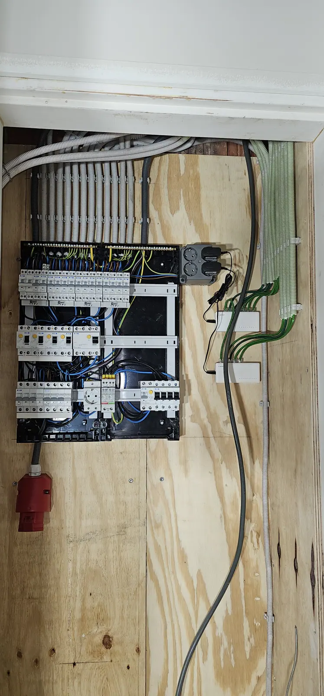
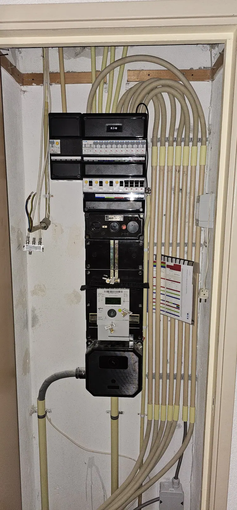

Groepenkast vervangen of uitbreiden
Groepenkast of meterkast vervangen of uitbreiden voor inductie, laadpaal of een verbouwing? Wij regelen het veilig en netjes in Emmen en omgeving.
Nieuw: stuur foto's of een korte video van je meterkast mee met je aanvraag. Dan krijg je vaak al een richtprijs zonder dat we eerst langs hoeven te komen.
Groepenkast vervangen of uitbreiden
Een groepenkast verdeelt de stroom in je huis en beveiligt je installatie. Bij nieuwe apparaten of een verbouwing is hij soms niet meer toereikend. Oosterveld vervangt of breidt je groepenkast uit, veilig en netjes.
Wanneer is het nodig?
- Je schakelt over op een inductiekookplaat
- Je laat een laadpaal, zonnepanelen of een thuisbatterij aansluiten
- Je verbouwt en hebt meer groepen of stopcontacten nodig
- De aardlekschakelaar valt regelmatig uit
- De kast is oud, bijvoorbeeld met smeltveiligheden

Wat gebeurt er bij vervanging?
Beoordeling
We bekijken je huidige kast en wat je nodig hebt.
Richtprijs
Je ontvangt een duidelijke prijs voor de klus.
Aanleg
We plaatsen de nieuwe kast met de juiste beveiligingen en sluiten alles aan.
Oplevering
We leggen uit wat we hebben gedaan en laten alles netjes achter.
Klanten over hun nieuwe meterkast
Reviews van klanten van Oosterveld.
“Ik had kortsluiting in mijn garage en kon zelf niet achterhalen wat de oorzaak was. Omdat ik eerder goede ervaringen met Jasper heb gehad, heb ik opnieuw contact met hem opgenomen. Hij kon op korte termijn langskomen, heeft de oorzaak snel gevonden en het probleem vakkundig opgelost. Jasper is niet alleen zeer deskundig, maar ook ontzettend vriendelijk en prettig in de omgang. Ik ben erg tevreden over zijn service. Echt een topper die ik iedereen van harte kan aanbevelen!”
“Voor een nieuwe meterkast hebben we Jasper gevraagd. Hij reageerde direct en heeft de klus perfect geklaard. We vroegen ook om wat extra stopcontacten te plaatsen en ook dat was prima.”
“De meterkast hing er snel in, Jasper doet zijn werk uitermate nauwkeurig. Hij legt uit wat er is en wat hij gaat doen en lost het probleem snel op!”
“Oosterveld installatie is een bedrijf met expertise en netheid in het installeren van elektra installaties. Bij ons thuis een dubbele meterkast geplaatst en daarbij ook een uitgebreid UTP kast voor internet etc.”
Meterkasten en groepenkasten die we hebben aangelegd
Nieuwe kasten, netjes bekabeld en overzichtelijk.


Veelgestelde vragen over de groepenkast
Hoe weet ik of mijn groepenkast verouderd is?
Een oude kast met smeltveiligheden, een aardlekschakelaar die vaak uitvalt of te weinig groepen voor je apparaten zijn tekenen dat vervanging of uitbreiding nodig is. Wij beoordelen het ter plekke.
Is een nieuwe groepenkast nodig voor een laadpaal of inductie?
Vaak wel, of in elk geval een extra groep. Dat hangt af van de capaciteit van je huidige kast. We kijken wat nodig is en leggen dat uit.
Passen jullie ook de meterkast aan?
Ja. Voor onder meer een nieuwe groepenkast, een laadpaal of een thuisbatterij kunnen aanpassingen in de meterkast nodig zijn.
Hoe vraag ik een richtprijs of offerte aan?
Via het formulier op deze site, per WhatsApp of telefonisch. Je krijgt eerst een richtprijs. Daarna komen we bij je langs voor de opname en ontvang je een definitieve prijs.
Klaar voor je richtprijs?
Vul je wensen in en ontvang snel een richtprijs. Daarna komen we langs voor een vaste prijs.